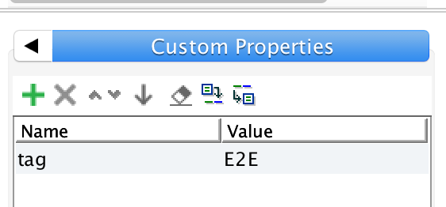

SOAPUI - Tagging by Test Suites
By default SOAPUI allows for tagging only at the test case level and it needs to be explicitly tagged at each test case level. There isn't a tagging mechanism at the test suite or project level. Therefore, if there is a need to define a broader test scope higher than the test case levels, users will have to tag each test case intended to be includd in the scope. This means that even if all the test cases within a test suites are meant to be within scope, it still needs to be explicitly tagged at each test case level.
To go places and do things that have never been done before – that’s what living is all about.
- Michael Collins, flew on Gemini 10 and Apollo 11
Fortunately, there is a workaround to this through the use of custom property and setup scripts that can be dynamically initialized to exclude or include test suites during the execution.
Given below are the breakdown of the requirements for a successful tagging at the test suite/project level -
- Define a custom tag at the project level In the example beow, "tagProject" is the custom property defined to drive the test execution scope based on the value passed. The value of this property can be passed as an environment variable from the CLI during execution.
- Add the following "Setup Scripts" at the project level to include/exclude test suites based on the tag passed. This setup script will compare the project level tag received as parameter and compare it against the test suite level tags and enable/disable the test suites accorindgly. For example if "SmokeTest" is the tag passed during runtime, the script will quickly scan through the test suites and enable only the ones matching the tag value. In other words, all test suites with tags not matching the value passed will be disabled.
- Add a custom property at each test suite level to define the scope for each test suite. In the example below, "E2E" is the tag defined for the test suite.
- Pass the value of the project level tag as parameter when executing the test.

def tagProject = context.expand( '${#Project#tagProject}' )
log.info("tagName passed is: "+tagProject)
for( testSuite in project.testSuiteList )
{
String tagTestSuite = testSuite.properties['tag'].value
if (tagTestSuite.contains(tagProject))
testSuite.disabled = false
else
testSuite.disabled = true
}

{kind=link}
Example: mvn clean install -DtagProject = "SmokeTest"
In the above example,"SmokeTest" is the value passed for the custom tag "tagProject" defined at the project level.
To go places and do things that have never been done before – that’s what living is all about.
- Michael Collins, flew on Gemini 10 and Apollo 11